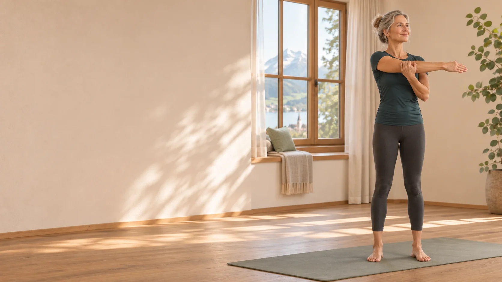
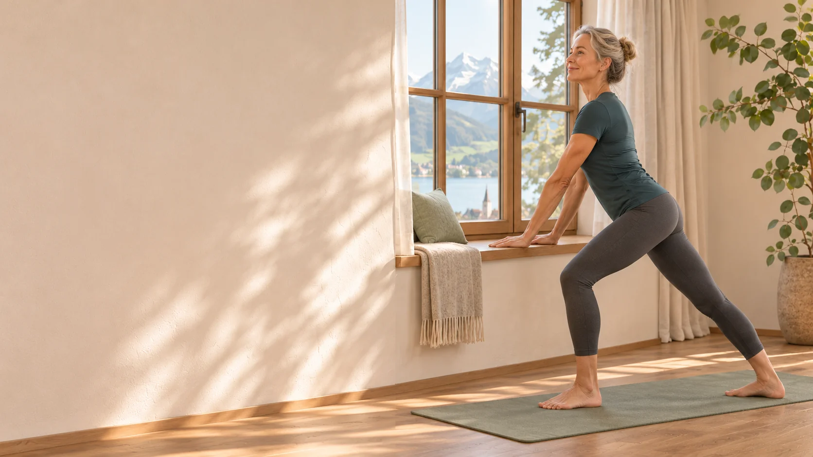
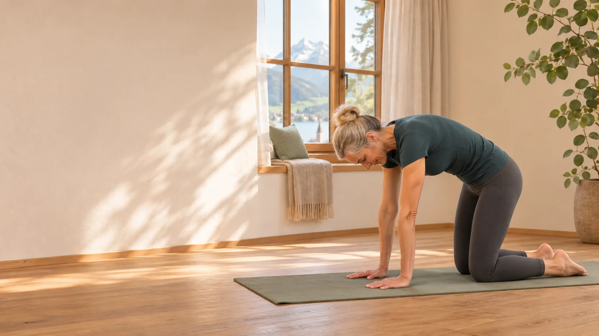

Commence la journée en bougeant
Étire-toi doucement au lever. Mobilise les épaules et les bras à ton rythme.

Un peu de mouvement. Chaque jour. Pour toi.
Bouger ne doit pas être compliqué. Quelques moments d'activité peuvent déjà faire du bien, sans pression ni performance. Trouve ce qui convient à ton quotidien.
Retour à l'accueilUne activité régulière favorise la santé du cœur, les muscles, l'équilibre, la mobilité et le bien-être. Même de courtes pauses actives comptent.
Étire-toi doucement au lever. Mobilise les épaules et les bras à ton rythme.

Lève-toi de temps en temps, fais quelques pas ou détends tes épaules.

Profite des petits trajets pour marcher à ton rythme.

Bouge lentement tes articulations, sans forcer.

Tiens-toi brièvement sur une jambe, avec un appui stable si nécessaire.

Danse, nage, fais du vélo ou promène-toi. L'essentiel est d'y prendre plaisir.
La force musculaire, l'équilibre et la marche régulière favorisent l'autonomie au quotidien. Commence par des mouvements simples et sûrs.
À titre indicatif, l'OMS recommande aux adultes 150 à 300 minutes d'activité modérée ou 75 à 150 minutes d'activité intense par semaine, ainsi que du renforcement musculaire au moins deux jours. Chez les personnes âgées, des activités d'équilibre et de renforcement fonctionnel au moins trois jours sont également utiles. Bouger un peu vaut mieux que ne pas bouger du tout.
Choisis tes exercices, adapte les intervalles et suis tes temps d'entraînement. Ton rythme. Tes exercices. Ton temps.
Découvrir PhysioClockRemarque : ces informations générales ne remplacent pas un avis médical. Respecte tes capacités et arrête en cas de douleur, de vertiges ou d'autres symptômes. Demande conseil à un professionnel de santé si nécessaire.